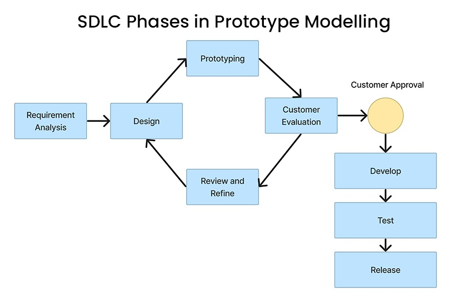

Prototüüpimine on tarkvara varajane katsevariant. see ei ole lõplik süsteem,
vaid tööriist ideede testimiseks, seda saab kasutada mitmes arendus etapis:
| Ühekordne prototüüpimine (Rapid throwaway Prototyping) | Evolutsiooniline prototüüpimine | Lisanduv prototüüpimine (Incremental Prototyping) |
|---|---|---|
| Prototüüp tehakse ainult probleemi parandamiseks. Hiljem see eemaldatakse ja asendatakse lõpliku süsteemiga mis tehtakse nullist. Seda tehakse siis kui katseversioon ei sobi tugevamale süsteemile. | Prototüüp areneb lõplikuks süsteemiks. | Süsteem jagatakse osadeks, iga osa jaoks tehakse eraldi prototüüp, mis hiljem ühendatakse lõplikku süsteemi. |
| Head küljed | Halvad küljed |
|---|---|
| Uute nõuetega saab hõlpsasti kohaneda, kuna on ruumi täiustamiseks. | Iga kord, kui klient prototüüpi hindab, võib nõuetes olla liiga palju erinevusi. |
| Puuduvaid funktsioone saab kergesti tuvastada. | Halb dokumentatsioon pidevalt muutuvate klientide nõudmiste tõttu. |
| Arendaja saab loodud prototüüpi tulevikus keerukamate projektide jaoks uuesti kasutada. | Prototüüpide ehitamisega kiirustavad arendajad võivad lõpuks saada mitteoptimaalseid lahendusi. |
| Prototüüpimine aitab vähendada projekti ebaõnnestumise riski, tuvastades potentsiaalsed probleemid ja lahendades need protsessi alguses. | Prototüüp võib jätta vale mulje valmimisest, mis võib viia toote enneaegse turuletoomiseni. |
